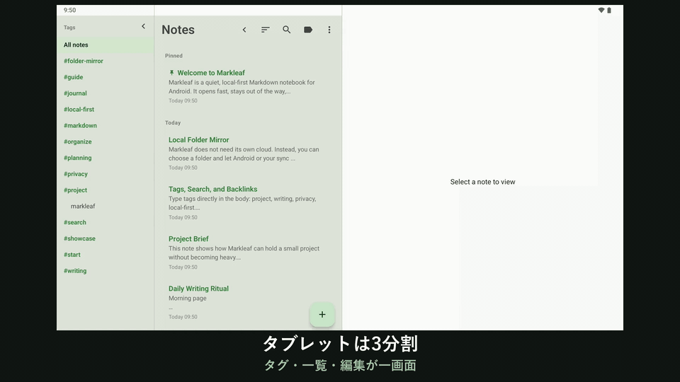

現在のリリース
v2.32.0 Quiet Formatting を搭載01 · 書く
構文は生きたまま、ツールは必要なときだけ現れる。
Markdown の原文はそのままに、見出しや強調は編集中も読みやすく表示されます。小さな Aa ボタン、選択範囲に応じたアクション、行頭の / コマンドで、画面を散らかすことなく書式を追加できます。
- Live Markdown と CommonMark/GFM プレビュー
- 13 種類のフォーマットアクションとハードウェアキーボードショートカット
- 表・コールアウト・Wikiリンクのクイック挿入
